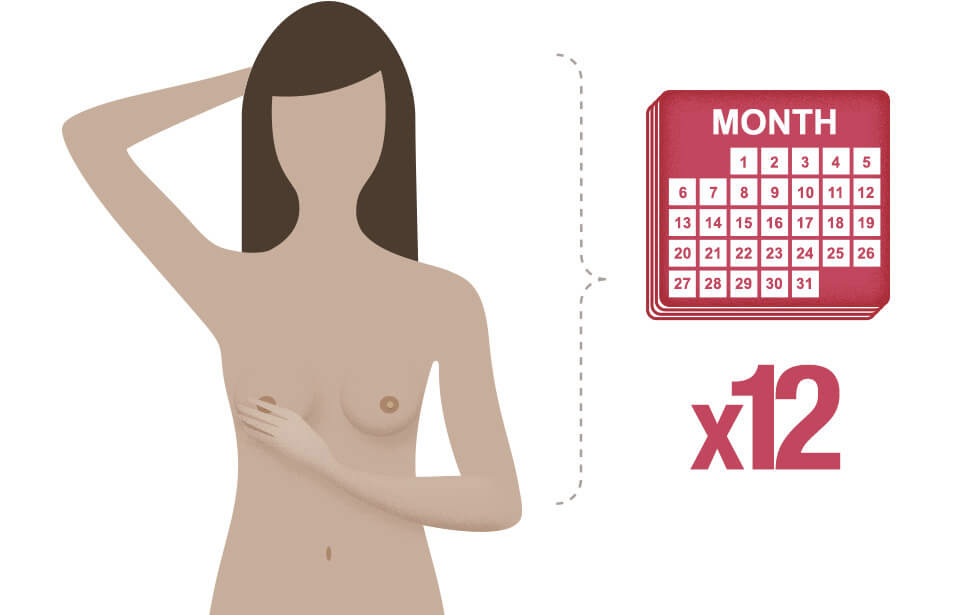
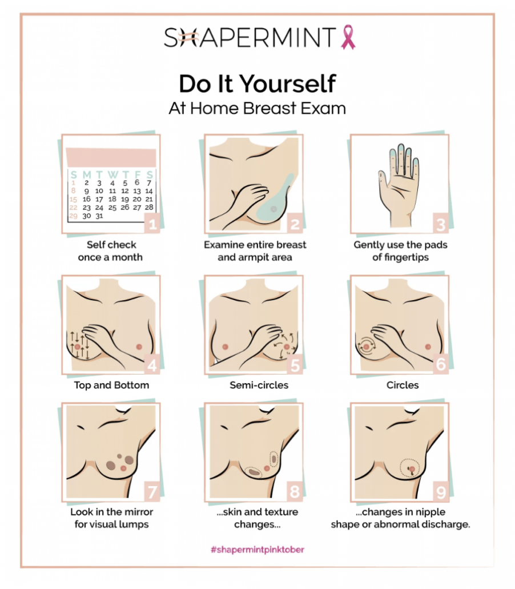

What Is A Breast Self-Exam?
A breast self-exam is an early detection tool that uses a combination of physical and visual examinations of the breasts to check for signs and symptoms of breast cancer. The purpose of a breast self-exam is to become familiar with the way your breasts normally look and feel. Knowing how your breasts normally look and feel, also called breast self-awareness, will help you identify any changes or abnormalities in your breasts, such as a new lump or skin changes. Any changes in your breasts discovered during a breast self-exam should be reported to your healthcare provider right away. While a breast self-exam is a useful tool for the early detection of breast cancer, it should not take the place of regular mammograms and clinical breast exams.
How Often Should A Breast Self-Exam Be Performed?
Adult women of all ages are encouraged to perform breast self-exams at least once a month. Lillie D. Shockney, Johns Hopkins University Distinguished Service Professor of Breast Cancer states, “Forty percent of diagnosed breast cancers are detected by women who feel a lump, so establishing a regular breast self-exam is very important.”

For women still menstruating, a breast self-exam should be performed a few days after her period ends. For those who are post-menopausal, a breast self-exam should be performed on the same day of each month, such as the 1st or 15th day of the month. While mammograms can help you to detect cancer before you can feel a lump, breast self-exams help you to be familiar with how your breasts normally look and feel. Alert your healthcare professional if you notice any changes in your breasts, such as a new lump, sore spot, changes in the appearance of the skin, or nipple discharge.
How Should A Breast Self-Exam Be Performed?
1. In the Shower
With the pads/flats of your 3 middle fingers, check the entire breast and armpit area, pressing down with light, medium, and firm pressure. Check both breasts each month, feeling for any new lumps, thickenings, hardened knots, or any other breast changes.
2. In Front of a Mirror
With your arms at your sides, visually inspect your breasts, looking for any changes in the contour or shape of the breasts, any dimpling, swelling, or other skin irregularities on or around the breasts, or any changes in the nipples.
Next, rest your palms on your hips and press firmly to flex your chest muscles. Look for any dimpling, puckering, or other changes, particularly on one side. Note that the left and right breasts will not exactly match—few women’s breasts are perfectly symmetrical.
3. Lying Down
When lying down, the breast tissue spreads out evenly along the chest wall. Place a pillow under your right shoulder and put your right arm behind your head. Using your left hand, move the pads of your 3 middle fingers around your right breast, covering the entire breast area and armpit. Use light, medium, and firm pressure to feel for any new lumps, thickenings, hardened knots, or any other breast changes. Also squeeze the nipple to check for discharge. Repeat these steps for your left breast.

Can I Rely On Breast Self-Exams Alone To Be Sure I Am Breast Cancer Free?
Mammography can usually detect tumors before they can be felt, so screening is key for early detection. But when combined with regular medical care and appropriate guideline-recommended mammography, breast self-exams can help women know what is normal for them so they can report any changes to their healthcare provider.If you find a lump, schedule an appointment with your doctor, but don’t panic — 8 out of 10 lumps are not cancerous. For additional peace of mind, call your doctor whenever you have concerns.
Weight loss is a useful strategy for preventing the effects of hormonal imbalance and insulin resistance.
“Even small amounts of weight loss, such as 5 to 10% of your body weight, can alleviate symptoms, restore ovulation, and enhance the likelihood of achieving pregnancy if that is your goal,” explains Dr. Maguire. Establishing a Consistent Exercise Routine
There are ways to prevent this
1. Keep Weight in Check
It’s easy to tune out because it gets said so often, but maintaining a healthy weight is an important goal for everyone. Being overweight can increase the risk of many different cancers, including breast cancer, especially after menopause.2. Be Physically Active
Regular exercise is one of the best things for your health. It can boost mood and energy. It can help keep weight in check. And it can lower the risk of many serious diseases, including breast cancer. Try to get at least 30 minutes a day, but any amount of physical activity is better than none.3. Eat Your Fruits & Vegetables – and Limit Alcohol (Zero is Best)
A healthy diet can help lower the risk of breast cancer. Try to eat a lot of fruits and vegetables and limit alcohol. Even low levels of drinking can increase the risk of breast cancer. And with other risks of alcohol, not drinking is the overall healthiest choice.4. Don’t Smoke
On top of its many other health risks, smoking causes at least 15 different cancers – including breast cancer. If you smoke, try to quit as soon as possible. It’s almost never too late to get benefits. You can do it. And getting help can double your chances of quitting for good: visit smokefree.gov or call 800-QUIT-NOW (in IL 866-QUIT-YES).5. Breastfeed, If Possible
Breastfeeding for a total of one year or more (combined for all children) lowers the risk of breast cancer. It also has great health benefits for the child. For breastfeeding information or support, contact your pediatrician, hospital or local health department.6. Avoid Birth Control Pills, Particularly After Age 35 or If You Smoke
Birth control pills have both risks and benefits. The younger a woman is, the lower the risks are. While women are taking birth control pills, they have a slightly increased risk of breast cancer. This risk goes away quickly after stopping the pill. The risk of stroke and heart attack is also increased while on the pill – particularly if a woman smokes. However, long-term use can also have important benefits, like lowering the risk of ovarian cancer, colon cancer and uterine cancer – not to mention unwanted pregnancy. So there’s also a lot in its favor. If you’re very concerned about breast cancer, avoiding birth control pills is one option to lower risk.7. Avoid Hormone Therapy for Menopause
Menopausal hormone therapy shouldn’t be taken long term to prevent chronic diseases. Studies show it has a mixed effect on health, increasing the risk of some diseases and lowering the risk of others. And both estrogen-only hormones and estrogen-plus-progestin hormones increase the risk of breast cancer. If women do take menopausal hormone therapy, it should be for the shortest time possible. The best person to talk to about the risks and benefits of menopausal hormone therapy is your doctor.8. Tamoxifen and Raloxifene for Women at High Risk
Although not commonly thought of as a “healthy behavior,” taking the prescription drugs tamoxifen and raloxifene can significantly lower the risk of breast cancer in woman at high risk of the disease. Approved by the FDA for breast cancer prevention, these powerful drugs can have side effects, so they aren’t right for everyone. If you think you’re at high risk, talk to your doctor to see if tamoxifen or raloxifene may be right for you.Don’t Forget Mammograms
Breast cancer screening with mammograms saves lives. It doesn’t help prevent cancer, but it can help find cancer early when it’s more treatable.
Most women should get yearly mammograms starting at age 40.
Women at higher risk for breast cancer may need to start mammograms earlier. So, it’s best to talk to a doctor by age 30 about any breast cancer risk factors you may have and if you’d benefit from earlier screening.
Regularly doing breast self-exams is not recommended for screening. They haven’t been found to have benefit. But you should be familiar with your breasts and tell a healthcare provider right away if you notice any changes in how your breasts look or feel.